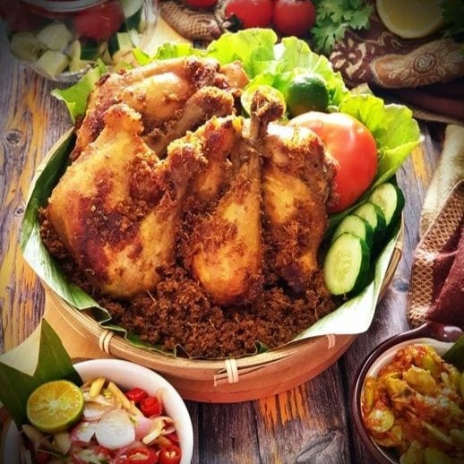

Resep Terbaik Minggu ini

.png)
Konon menurut legenda Masyarakat Makassar, es pisang ijo dibuat oleh juru masak istana yang hampir dihukum mati oleh seorang raja yang terkenal kejam. Juru masak bernama ljo tersebut melakukan kesalahan dengan membuat Raja marah karena masakannya tidak enak. Jo pun hendak dihukum pancung didepan rakyat, namun ia memutar otak agar selamat. Akhirnya ljo memasak kudapan lezat dan segar untuk meredakan amarah sang raja.
Lanjutkan Membaca.png)
Konon katanya salah satu murid Sunan Gresik atau Maulana Malik Ibrahim yang bernama Satah terbiasa mengolah daging kambing. Satah kemudian membuat hidangan dan daging kambing yang dipotong kecil-kecil la kemudian membumbui daging ini dan ditusuk menggunakan bilah bambu sebelum dibakar. Tak disangka makanan ini banyak disukai hingga akhirnya makanan ini dikenal dengan sebutan daging satah.
Lanjutkan Membaca.jpg)
Foodie hadir dengan komitmen untuk menghadirkan kegembiraan dalam kegiatan memasak sehari-hari, dengan keyakinan bahwa memasak merupakan kunci untuk kehidupan yang lebih bahagia dan sehat. Kami membangun platform untuk para penggemar masak, di mana mereka dapat menemukan dan menikmati beragam resep yang telah disediakan serta menemukan inspirasi kuliner yang baru.
.jpg)